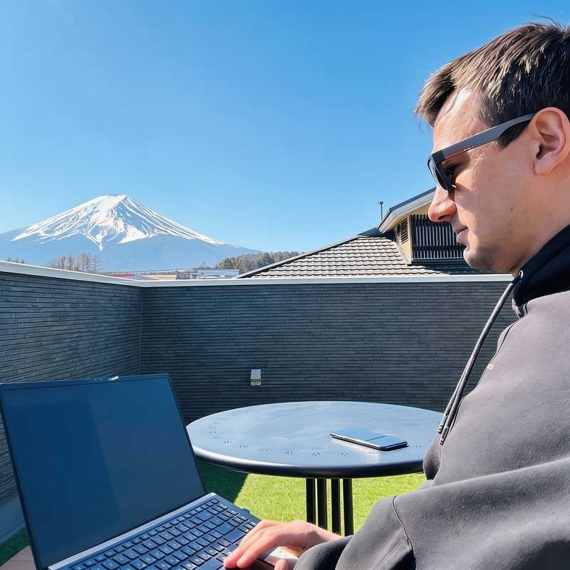

Performance-маркетолог · Google Ads · Meta Ads · AI Search
Тель-Авив, Израиль
Настраиваю и веду платную рекламу для бизнеса в Израиле и за рубежом.
14 лет в цифровом маркетинге, 10 из них покупаю рекламу на свои деньги по партнёрской модели — там доход зависит от результата, а за ошибку платишь лично. Поэтому смотрю на рекламу как на инвестицию: сначала цена целевого действия и окупаемость, потом всё остальное.
Сейчас веду performance-маркетинг русскоязычного маркетплейса в Израиле, продвигаю недвижимость и услуги локальных специалистов, параллельно тестирую e-commerce на глобальном рынке.

Израиль, США, Украина, Европа, Латинская Америка, ОАЭ. Вертикали: e-commerce, недвижимость, локальные услуги, обучение, финтех, гейминг, мобильные приложения. Источники трафика: Google Ads, Meta, Microsoft Ads, нативные сети MGID, Taboola, Outbrain.
Alexander Korop — performance marketing specialist based in Tel Aviv, Israel. I plan, launch and run paid advertising in Google Ads and Meta Ads for businesses in Israel and internationally, plus analytics setup (GA4, Tag Manager, Conversions API), landing pages and generative engine optimisation for ChatGPT and AI search.
14 years in digital marketing, 10 of them buying traffic with my own money on an affiliate model across e-commerce, dating, fintech, gaming and mobile apps in Tier 1–3 markets. Since 2021 I work directly with businesses in Israel, the US, Ukraine, Europe and Latin America.
I work solo — the person you talk to is the person who builds the account. Ad accounts are registered in the client's name from day one, and the client keeps them, with all history and data, if we part ways. Case studies with account screenshots: tachlesads.com/cases.